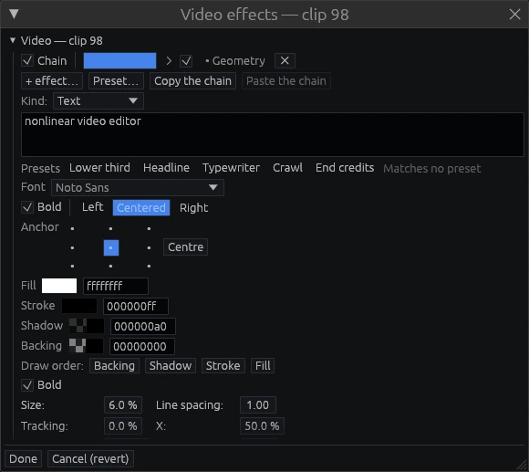

Reels and generators
Reels (nested compositions)
Select events and choose Edit → Collapse selection into a reel. The events become one reel event that you can place, trim, slow down and reuse like any clip. Every instance plays the same reel, so editing the reel updates all of them; a ×N badge shows how many places use it.
- Enter or a double-click expands the reel in place. Its tracks open under the instance, and the rest of the project keeps playing around it.
- Enter again opens the reel on its own, with its own zero.
- Esc steps back out, one level at a time.
- The bin shows reels next to files, with a mini-map of their content.
- Inside a reel, right-click a parameter's label to publish it. Each instance then sets its own value — for example, the text of a lower-third reel.
- Edit → Remove unused reels cleans up.
Generators
File → Create a generator… adds media that has no file. A generator is placed and edited like a clip. Its settings live on the event, and they open as the first slot of the event's effects window.

- Background: Solid color, Gradient, Four-corner gradient, Noise field, Transparent.
- Shapes: Rectangle, Ellipse, Line.
- Titles and countdown: Text, Timecode, Countdown leader.
- Signal check: Checkerboard, SMPTE bars, Colour bars 75%, Colour bars 100%, Grey ramp, Grey steps, Chroma plane, Level window.
Titles. You set the text, font, size, tracking, line spacing, alignment and anchor, plus fill, stroke, shadow and backing, and the order they are drawn in. The presets (Lower third, Headline, Typewriter, Crawl, End credits) set values and curves. You can edit those curves like any others.
Fonts are vendored, so a title renders the same on every machine.